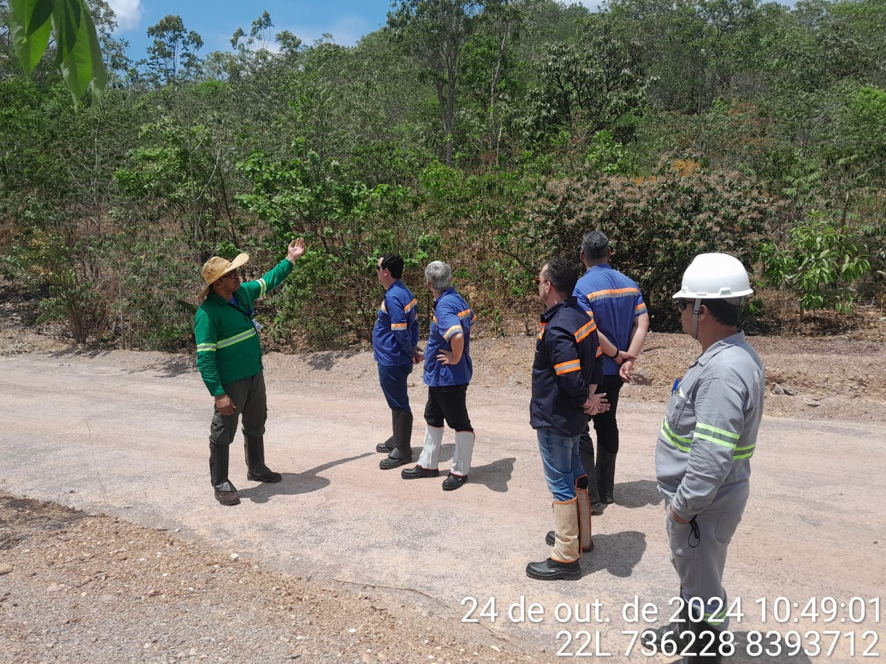
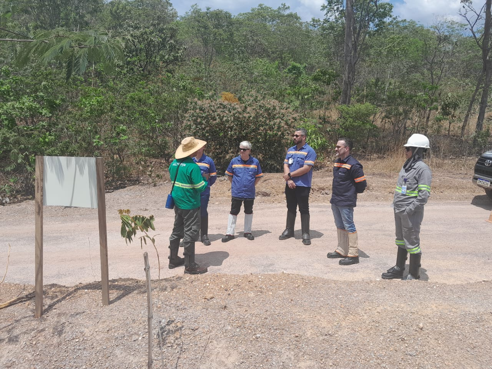
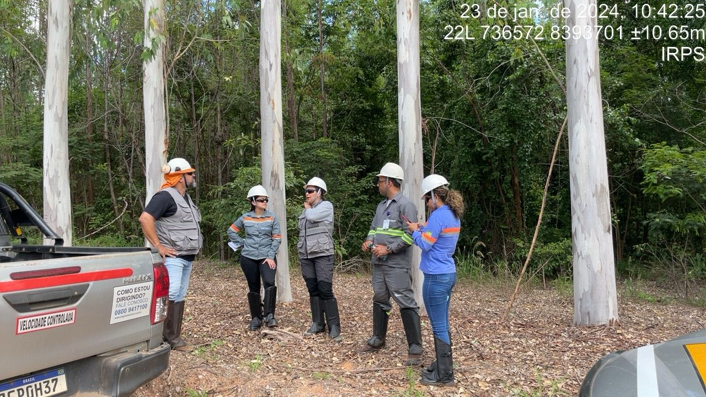

🌱
Área degradada
Diagnóstico, recuperação, revegetação, manutenção e monitoramento.
Conhecer solução →A Ordone Agroambiental integra experiência de campo, engenharia agronômica, recuperação ambiental, solos, geotecnologias e gestão para transformar demandas em planos de ação claros e rastreáveis.

Imagens reais do acervo fornecido passam a substituir a estética genérica de banco de imagens.
Escolha o problema e responda somente o que faz sentido para sua situação. O site monta uma ficha organizada antes do contato.
Notificação → perguntas de prazo e órgão.
Erosão → perguntas sobre água e comportamento.
Solo → objetivo e documento.
Mapa → finalidade e dados disponíveis.
O visitante reconhece a situação primeiro; depois o site apresenta os serviços relacionados.
Diagnóstico, recuperação, revegetação, manutenção e monitoramento.
Conhecer solução →Solo, água, drenagem, proteção superficial, bioengenharia e revegetação.
Conhecer solução →Interpretação vinculada ao objetivo e dimensionamento quando houver dados suficientes.
Conhecer solução →Organização do documento, prazos, obrigações, mapas e informações faltantes.
Conhecer solução →Dados espaciais organizados para mapas, relatórios e análise territorial.
Conhecer solução →O Diagnóstico Ordone organiza o problema antes do contato comercial.
Iniciar diagnóstico →O acervo usado na construção do site registra coordenação ambiental, plantios, manutenção, recuperação, bioengenharia, análise de solo, geoprocessamento e acompanhamento de PRADA.


Uma manifestação como erosão pode envolver água, relevo, solo, drenagem e cobertura vegetal. O site evita respostas automáticas simplistas.
Problema e objetivo.
Área, dados e documentos.
Escopo e estratégia.
Evidências e evolução.
O conteúdo relevante é selecionado, resumido e transformado em artigos, estudos de caso, checklists e ferramentas, mantendo a origem identificável.
Rastreabilidade espacial de intervenções registradas em campo.
Como resultados laboratoriais entram na interpretação de um caso específico.
Como uma intervenção foi definida em campo conforme o processo observado.
Documentos, mapas, fotos, condicionantes, cronograma e monitoramento em uma estrutura única.
O site foi estruturado para separar informação, triagem e decisão técnica.
Começamos pelo problema e pelo objetivo.
Organizamos documentos, mapas, fotos e dados disponíveis.
Relacionamos as informações ao contexto da demanda.
Definimos o produto técnico e o próximo passo.
Uma mesma demanda pode exigir leitura documental, análise de área, mapa, campo e acompanhamento. A estrutura do site foi organizada para conectar essas etapas.
Problema, território, documentação e execução são tratados como partes da mesma demanda.
O acervo é transformado em conteúdo, referência e contexto, sem apresentar um projeto isolado como regra universal.
O cliente pode começar pelo problema, pelo serviço ou simplesmente explicar o que está acontecendo.
Você não precisa conhecer os termos técnicos para falar com a Ordone.
Você não precisa saber qual serviço técnico contratar. Conte o que aconteceu e a Ordone organiza a próxima etapa.
Responda algumas perguntas e organize sua demanda.
Começar diagnóstico →